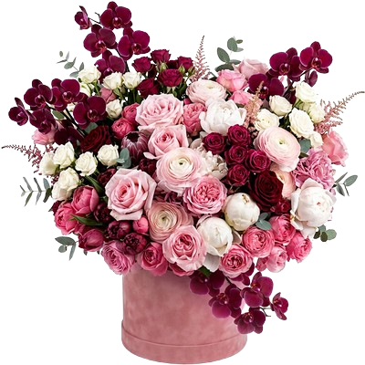
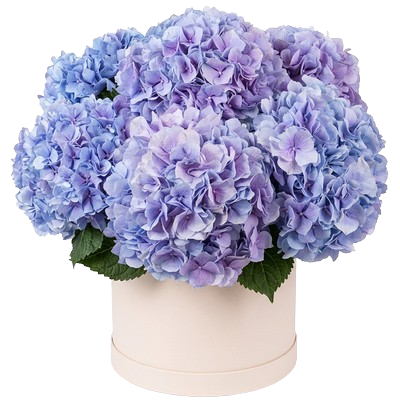

.png)
.png)




Букеты свежих цветов в Германии - выбирай цвета под настроение Дарить цветы на праздник – хорошая традиция, которая популярна уже много веков. Эти прелестные растения создают атмосферу радости и веселья. Они поднимают настроение, наполняя своим ароматом помещение и удивляя богатством красок. Приобрести отличную композицию можно в интернет магазине katiakissa.germany У нас оперативная и удобная доставка букетов в Германии. Витрины с разнообразными ансамблями из цветов и вкусными подарками позволяют выбрать наиболее удачный вариант. Все композиции изготавливаются после заказа, поэтому растения свежие и стойкие. Букеты в Германии - аромат букета цветов, который дарит восторг Прежде чем купить букет в нашем магазине, ненавязчиво поинтересуйтесь у виновника торжества, какие цветы он любит. Случается, что человек не переносит запах определенных растений. Учитывайте также возраст адресата. Если это молодая девушка, то остановите выбор на композициях из цветов, которые еще полностью не раскрылись и имеют пастельные оттенки. Хорошим вариантом станут розы, тюльпаны, ландыши, хризантемы. Женщинам бальзаковского возраста стоит заказать букет в Германии, который будет состоять из ярких, пышных экземпляров: лилий, гладиолусов, распустившихся роз. Представительницам прекрасного пола в возрасте дарите элегантные композиции глубоких и насыщенных оттенков. Если вы планируете поздравить с праздником мужчину, можно выбрать строгий букет цветов в Германии, а можно фруктовую корзинку или вкусный торт. Такой сюрприз не оставит равнодушным вашего любимого, друга, отца или начальника. В интернет магазине katiakissa.germany есть предложения на любой вкус. Профессиональные консультанты помогут определиться с подарком. У каждого покупателя также есть возможность составить букеты на заказ в Германии, которые удивят адресата и подарят много положительных эмоций. Преимущества заказа цветов в магазине katiakissa.germany Доставка цветов в Германию от katiakissa.germany предлагает заказать букет в Германии для дорогого человека с доставкой. При этом услуга предоставляется каждому клиенту абсолютно бесплатно. Мы вручим ваш сюрприз получателю в течение трех часов. Но, если времени ждать совершенно нет, выручит дополнительный сервис – мгновенная доставка. Опытные курьеры уже через час порадуют адресата.